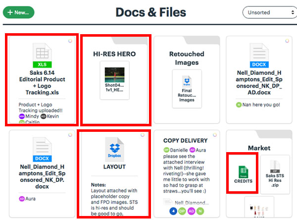
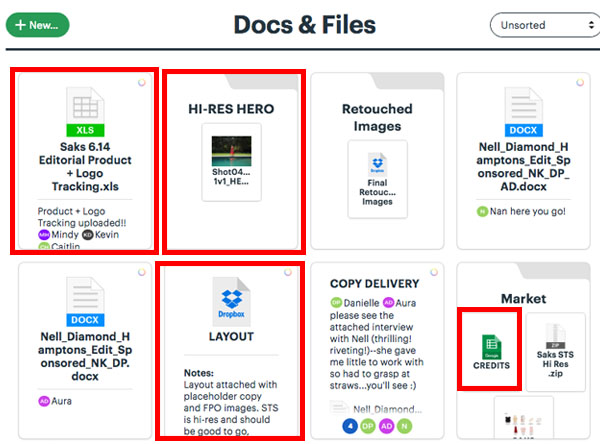
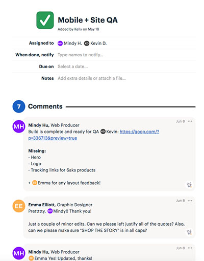

This manual will help you navigate the goop's world of web production. It provides resources and reusable code that I found to be effective.
To keep this manual digestable, use the sidebar to get you what you need.
Project Lifecycle
This section is designed to help you visually see how newsletters and landing pages are delivered to us. Below is a simple diagram:
 We don’t need to fixate on this too much because we have a Creative Project Manager to handle this workflow. The Creative Project Manager is responsible for managing our project timeline and communicating with these stakeholders on our needs to complete and deploy these static web pages.
We don’t need to fixate on this too much because we have a Creative Project Manager to handle this workflow. The Creative Project Manager is responsible for managing our project timeline and communicating with these stakeholders on our needs to complete and deploy these static web pages.
The Director of Content Operations (DCO) from the Editorial team. DCO is not only responsible for managing the editorial team, but also keeping the web producers in the loop in regards to upcoming newsletters in the pipeline. You can find these newsletters listed out on basecamp or this google sheet. We’ll go into more depth about basecamp and collaborative tools later.
You'll notice that the web producers are at the end of the funnel. This means photo assets may not be ready, product samples are still being shipped, mockups are delayed and a slew of things can happen near the project's deadline. It can be hectic. It can be stressful.
But, what I learned is that this is just the nature of the beast in this creative/fashion sector. This is a fast-paced content digital media company.
Our advice: CYA (cover your asses). Overcommunicate as much as you can and always document everything you can on basecamp so it doesn't fall through the cracks.
What about QA? How do I handle product swaps or requested changes? Everyone is pinging me at the same time! Let's talk about best practices in the colloborative tools 101 section.
Collaborative Tools 101

Basecamp is our project management tool. There are two version of basecamp:
Basecamp 3 is intuitive and it's simple to navigate, but there are some etiquettes and dos/don'ts on basecamp. Let's take a deeper-dive into basecamp 3.
From the homepage, you're able to search for projects by the title of the newsletter or landing page. We'll use Saks Spring 18 as our example.

This is the project's dashboard. Web Producers need to focus only on these four highlighted pods:

UPDATE:


- Basecamp 2 is used as a calendar to organize all of our upcoming deadlines.
- Basecamp 3 houses all of the requirements needed to complete a project.
Basecamp 3 is intuitive and it's simple to navigate, but there are some etiquettes and dos/don'ts on basecamp. Let's take a deeper-dive into basecamp 3.
From the homepage, you're able to search for projects by the title of the newsletter or landing page. We'll use Saks Spring 18 as our example.
This is the project's dashboard. Web Producers need to focus only on these four highlighted pods:
Work Brief: Start all of your projects here by marking your name as the person building out this project. Stakeholders would be listed here as well (designer, editor, and etc).
Campfire: used for general discussion and adhoc requests. Informal discussion typically happens before the mockup is drafted and after the page is deployed on production. Examples would be brainstorming creative look/feel for a newsletter or requesting changes and additions to a live page.
Doc & Files: important assets are housed here for you to get started with your build. This includes merch/product descriptions, mockup layout, ad logo/product trading, and hero images.

- Ad logo/product tracking links: delivered from Brand Partnership and Client Services team. You can learn more about how to integrate this into your code in the Ad/Sponsorship section. Note: these assets is delivered to you late in the project lifecycle.
- Hi-Res Hero: delivered by the Photo team. Lo-res version will be readily available but the hi-res images will sometimes be sent to you late in the game as well.
- Layout: delivered by the Production Graphic Designer. This is everything you need to get started with your build. It may contain For Position Only (FPO) images at first, but this is enough to start coding.
- Credits: delivered by the Retail Editors or the Merchandising Operations Coordinator. This spreadsheet will have the product description and hyperlinks. If anything is missing, it's because the product hasn't launched yet or the product link is coming from the client which you can find in the product tracking file.
To-dos: your tasks includes building the story and notifying your colleagues to QA and proof your work.
Once you're finished with building your newsletter, you want to do a few things when it comes to proofing your work.
DOCUMENT EVERYTHING!
What are you missing? Here, you see Mindy listing out the items that are still pending or missing from her work. Like I mentioned earlier, certain assets will be arriving late to you, but it's critical that you CYA and document this onto basecamp. I prefer to tag the point-person on basecamp. If I'm missing a hero image, I will tag the Photo Editor as a friendly reminder that we need our hi-res image.
Next, you want your Web Producer teammates and the Production Graphic Designer to proof your work. They will leave comments for you to impliment and change. Please impliment these changes the day before the deadline.
Tip: to minimize mistakes, triple check your work on desktop and mobile. Refer to the Style Guide and the layout if you're unsure about how an element should look. This will limit the back-and-fourth discussion on basecamp.
You also want to notify the Copy Chief to QA the copy of the project. This is done in the Copy QA task.
UPDATE:
Please notify stakeholders when a project is ready for QA on the message board.
Dropbox is used to find mockup files from the Production Graphic Designers. The devs mostly use DB for finding the psd files, but it also used to house all of the Marketing Landing Pages (MLP). MLPs are one-off static pages to promote things like launching a new featured product, special event page, goop collabs, etc.
There are a shit-ton of files on DB. So do not sync everything. This is the only folder you need to sync. See screenshot of the folder path below:
Slack is our messaging platform to communicate with the all the goopers.
If you're new to using slack, I recommend reading this article: How to Navigate Office Etiquette on Slack.
I'll cover some of the key channels we use and its purpose:
- web-dev-and-edit: We use this channel a lot to communicate with the DCO and Deputy Editor regarding the newsletter stories for the week.
- productionfirechief: This is dedicated to only emergencies. If something is absolutely urgent and broken, the assigned fire chief is on-call to fix the bug. Use your best judgement here, because people will tag you regarding a "bug" that can wait until the next day. We rotate every week on the fire chief duties.
IMPORTANT Tip: Use layman's terms when you're responding to the editors. You should sound knowledgable and credible without using tech buzzwords and jargons. They are not coders. - tech-producers: This is used for general discussion amongst the web producing team.
- the-den: The fun channel! It's informal and and fun fun fun.